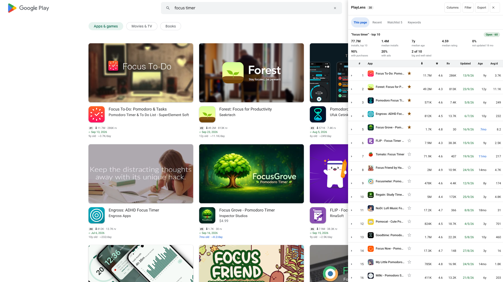

Free open-source Chrome extension that shows exact installs, ratings, app age and last-updated dates for every app directly on Google Play list pages — developer pages, search results, collections. Compare, follow and export them from one side panel.
On the Chrome Web Store · MIT licensed · no tracking · all data stays in your browser
Prefer to install it yourself? Download the zip.

Exact installs (49.2M, not “10M+”), number of ratings, update date colour-coded by freshness, app age and installs per day — right under each card's own rating, or as a strip on the icon.
Each result carries its position, #1, #2, #3… The table and the exports keep it together with the search term.
A table of every app on the page: sort, choose columns, filter by installs, rating, age or freshness, and export CSV or JSON with all fields.
Rating spread with the share of 1–2★, price and in-app purchases, data safety, developer email and website, store screenshots, and a comparison across countries.
Star an app to follow it. PlayLens notes changes of version, name, price and rating, and measures installs per day from a daily record kept on your device.
The latest 1–3★ reviews of an app with the words that come up most, and an export by stars and date. Reviewer names are left out.
Play's own search suggestions for a word, each scored from its first ten results: Open, Contested or Crowded.
The whole portfolio in one line: total and median installs, average rating, how many apps were updated in the last 90 days.
Every part can be switched on or off from the popup or the settings page. Changes apply instantly — no page reload.
No account, no analytics, no servers of our own. Requests go straight to play.google.com and everything stored stays on your device.
playlens.zip and unzip it.chrome://extensions and turn on Developer mode.Install PlayLens and open any Google Play list page. The exact install count, rating, number of ratings, last-updated date and app age appear on each app card directly — no clicking through.
Any page that shows a grid or row of app cards: developer pages, search results, category and collection pages, "Similar apps", and the Play home page.
Yes. Play's own cards round to something like "824K". PlayLens reads the structured data on each app's detail page, so you get 824.1K — the real figure, useful when you are comparing two apps that both round to the same number.
Yes. Open the side panel and click Export — copy the table, or download it as CSV or JSON with every field, ready for Sheets or Excel.
No. There is no account, no analytics and no server of ours. PlayLens runs only on play.google.com, fetches the same public pages you could open yourself, and keeps what it stores — cache, Recent list, Watchlist — on your device. See the privacy policy.
Yes — it is a standard Manifest V3 extension, so any Chromium-based browser can load it.